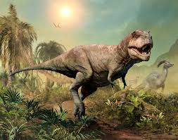
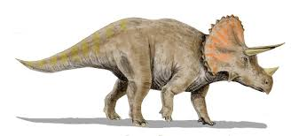
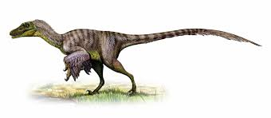
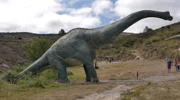
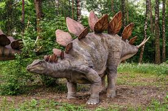
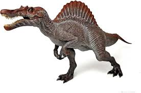
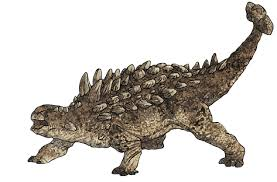
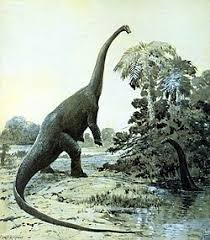
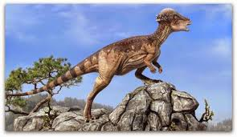
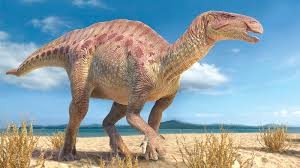

Conoce los distintos tipos de Dinosaurios
Tiranosaurio Rex

Dieta: Carnívoro.
Tamaño: 12 metros largo, 4 metros alto.
Peso: 8-9 toneladas.
Período: 68-66 millones de años.
Hábitat: Norteamérica.
Triceratops

Dieta: Herbívoro
Tamaño: 9 m largo, 3 m alto
Peso: 6-12 toneladas
Período: 68-66 millones de años
Hábitat: Norteamérica
Velociraptor

Dieta: Carnívoro
Tamaño: 2 m largo, 0.5 m alto
Peso: 15-20 kg
Vivió: 75-71 millones de años
Hábitat: Asia (Mongolia)
Brachiosaurus

Dieta: Herbívoro
Tamaño: 25 m largo, 12 m alto
Peso: 30-50 toneladas
Vivió: 154-153 millones de años
Hábitat: Norteamérica y África
Stegosaurus

Dieta: Herbívoro
Tamaño: 9 m largo, 4 m alto
Peso: 4-5 toneladas
Vivió: 155-150 millones de años
Hábitat: Norteamérica
Spinosaurus

Dieta: Carnívoro (principalmente peces)
Tamaño: 15 m largo, 5 m alto
Peso: 6-7 toneladas
Vivió: 112-97 millones de años
Hábitat: África (Egipto, Marruecos)
Ankylosaurus

Dieta: Herbívoro
Tamaño: 6-8 m largo, 1,7 m alto
Peso: 5-8 toneladas
Vivió: 68-66 millones de años
Hábitat: Norteamérica
Diplodocus

Dieta: Herbívoro
Tamaño: 27 m largo, 4,5 m alto
Peso: 10-16 toneladas
Vivió: 154-150 millones de años
Hábitat: Norteamérica
Pachycephalosaurus

Dieta: Herbívoro / Omnívoro
Tamaño: 4,5 m largo, 1,5 m alto
Peso: 450-500 kg
Vivió: 70-66 millones de años
Hábitat: Norteamérica
Iguanodon

Dieta: Herbívoro
Tamaño: 10 m largo, 3 m alto
Peso: 4-5 toneladas
Vivió: 126-122 millones de años
Hábitat: Europa